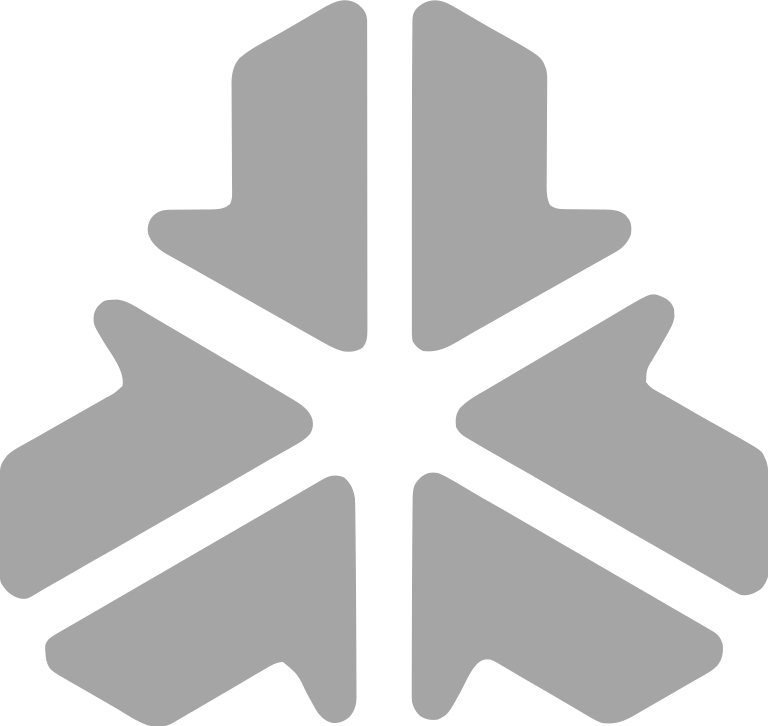

01 / DEFINE
Core
定义上下文、边界与工作单元，让系统知道每次执行从哪里开始。

OAP 把一次工作的边界、能力、连接、流程与执行环境拆成五层。它们彼此协作，也都可以独立替换。
定义上下文、边界与工作单元，让系统知道每次执行从哪里开始。
把可复用的能力装进 Agent，让知识、工具与方法可以持续扩展。
连接模型与外部服务，在不同 Provider 之间保持清晰、可替换的接口。
把节点、依赖与数据流组织成顺序、并行或条件执行的工作路径。
接入文件、网络与数据库，让计划在受控环境里真正产生结果。
每一次执行都保留清晰的结构：先理解，再组合；先审核，再行动。复杂任务因此变得可以掌握。
从自然语言开始，让 Agent 理解你真正想完成的工作。
把模型、工具与技能组合成可读、可复用的 Pipeline。
在真正执行前看见权限、步骤与数据流，保留最终决定权。
在 Runtime 中执行并追踪产出，让每一步都有迹可循。
从对话到工作流，再到文件与代码，OAP 把不同的工作方式放在同一条连续的路径上。
用自然语言提出目标，与 Agent 一起探索问题、生成计划，并在需要时重新规划。
用结构化的方式查看节点、依赖与数据传递，让复杂的执行逻辑变得清楚。
回到文件、代码与输出本身，在一个面向创作的工作台里完成最后一公里。
系统的边界很明确：让 AI 更有能力，也让人始终知道它正在做什么。
数据、凭据与执行环境优先留在自己的设备与工作区中。
Provider、Skill、Runtime 与工具都可以成为可替换的组件。
计划、权限、执行与结果都保持可见，让自动化不再是黑箱。